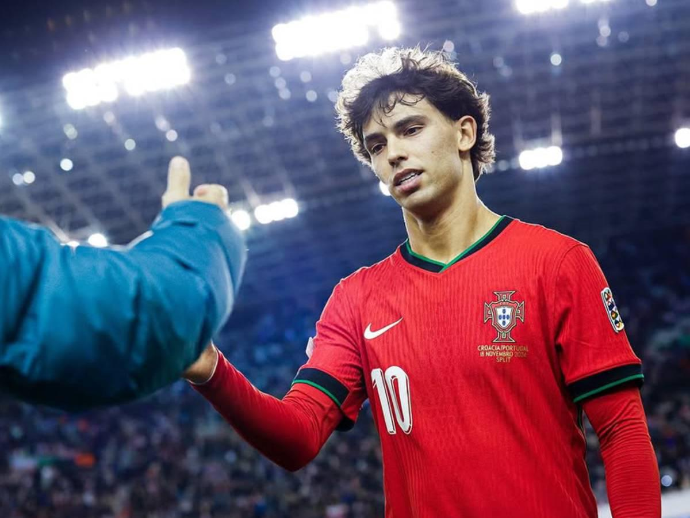
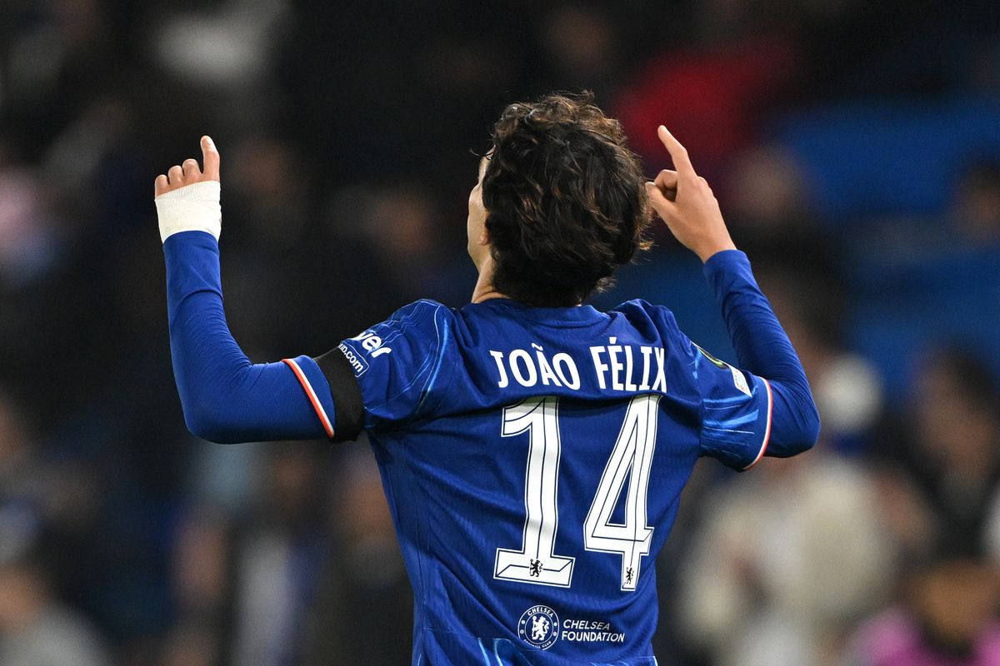
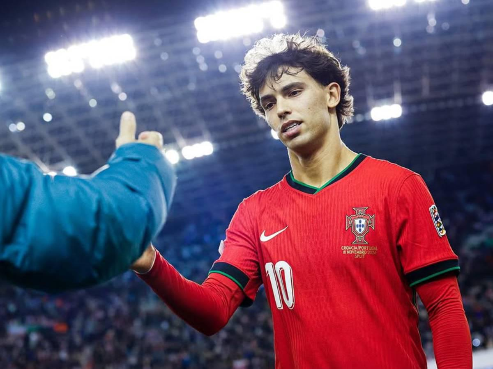
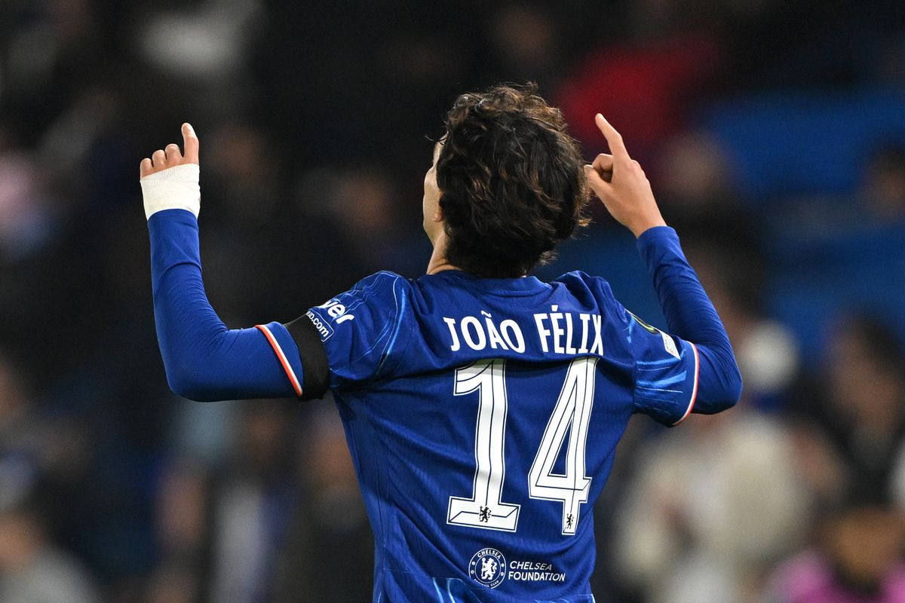
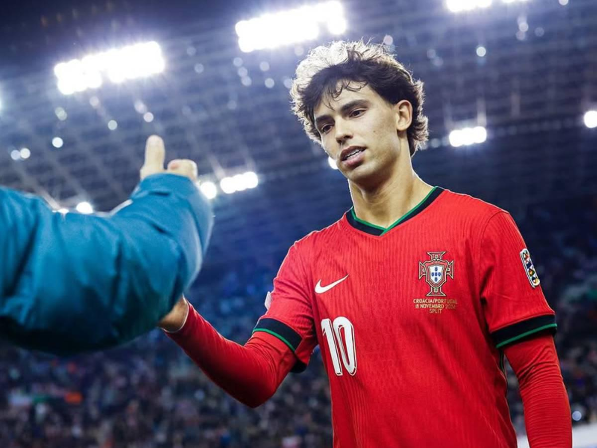
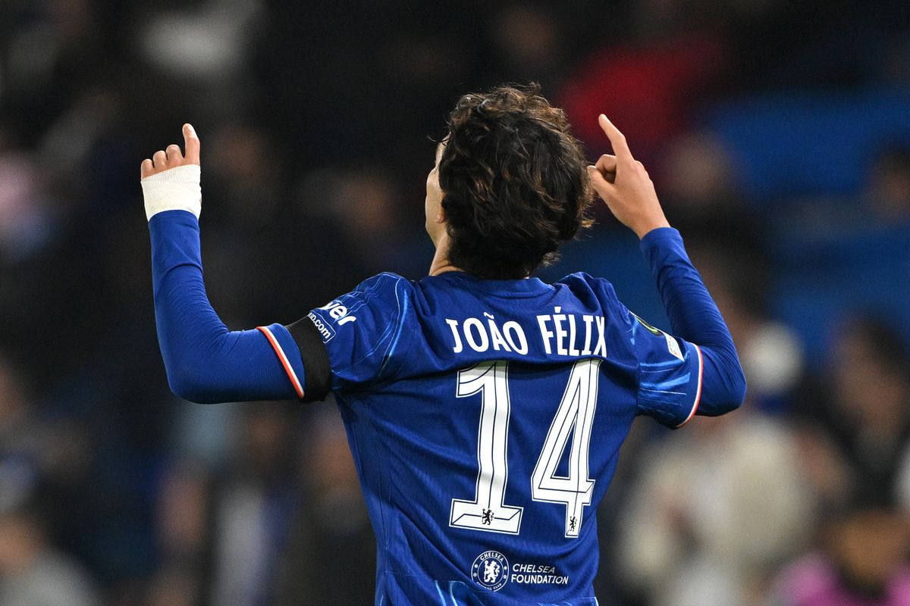
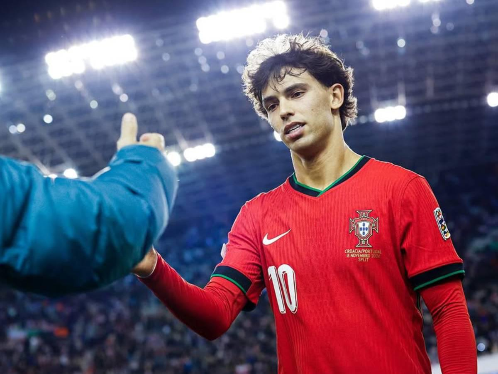
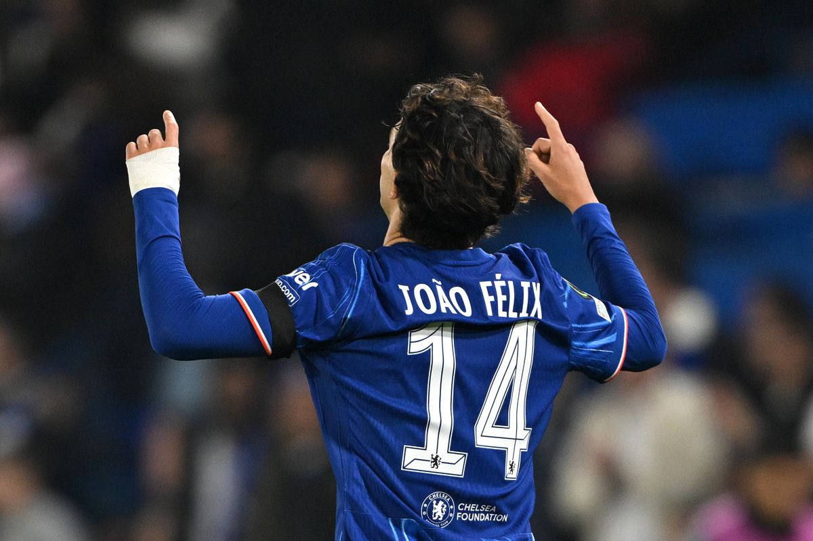
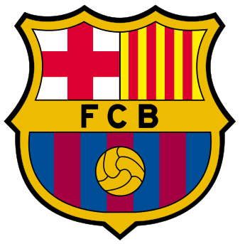

Galeria de Imagenes
 








| Año | Club | Club | Fichaje | Club | Club | Costo |
|---|---|---|---|---|---|---|
| 2012/2015 | Fc porto sub-15 | Salida | Padreloense j17 | Libre | ||
| 2015/2016 | Padreloense j17 | Salida |  |
Benfica | Libre | |
| 2016/2019 | |
Benfica | Compra |  |
Atletico de madrid | 127.20 mill.€ |
| 2022/2023 | |
Atletico de madrid | Cesion | Chelsea | 11.00 mill.€ | |
| 2022/2023 | Chelsea | Fin cesion | |
Atletico de madrid | Fin de cesion | |
| 2023/2024 | |
Atletico de madrid | Cesion |  | Barcelona | 50.00 mill.€ |
| 2024/2025 | Barcelona | Fin cesion | |
Atletico de madrid | Fin de cesion | |
| 2025/2025 | |
Atletico de madrid | Cesion | Chelsea | 52.00 mill.€ | |
| 2025/2025 | Chelsea | Cesion | |
Ac milan | 5.50 mill.€ |